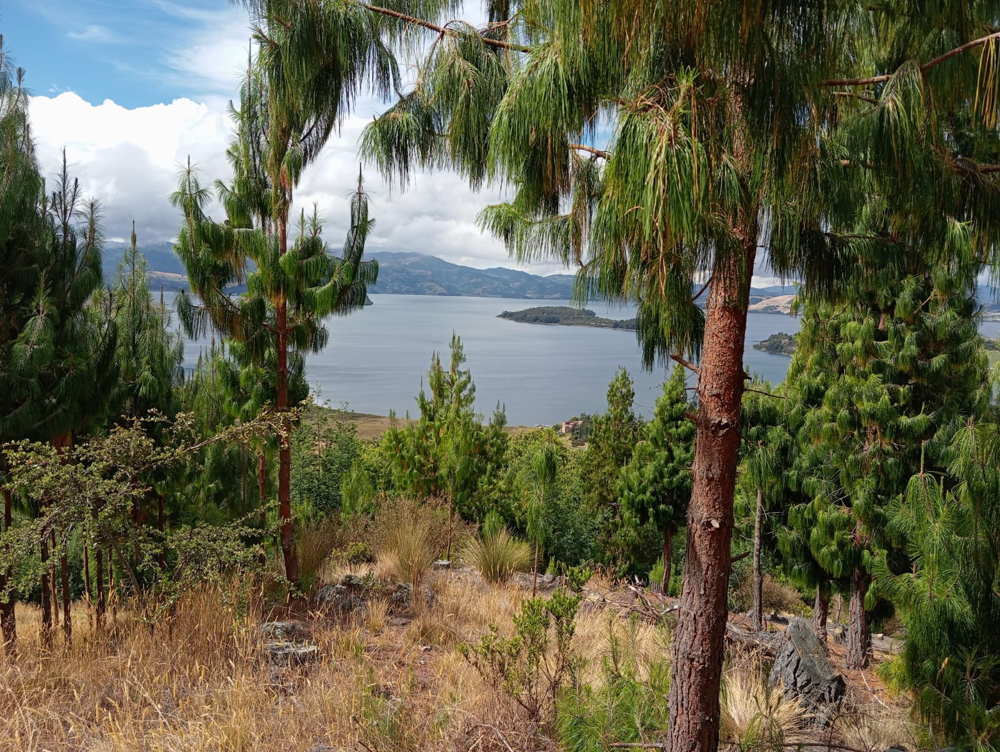

El Monte Tabor es uno de los baluartes geográficos y espirituales más imponentes que flanquean la cuenca del Lago de Tota. A diferencia de los senderos periurbanos de menor exigencia, este macizo se encuentra catalogado bajo el rango de Nivel Cebollero (Dificultad: Media / Intermedio), consolidándose como el escenario perfecto para excursionistas, amantes del turismo de aventura y caminantes con una preparación física moderada que buscan experimentar el verdadero relieve de la alta montaña boyacense.
A diferencia de los senderos urbanos pavimentados, el ascenso al Monte Tabor introduce al excursionista en la geografía escarpada que rodea la cuenca alta del Lago de Tota y sus datos técnicos son indispensables para la planificación de agencias y viajeros independientes: la altitud en el punto de partida es de aproximadamente 3.030 m.s.n.m. y la altitud en la cúspide alcanza una cota cercana a los 3.250 m.s.n.m., lo que representa un desnivel positivo exigente de entre 210 y 220 metros de inclinación continua; la distancia del recorrido es de aproximadamente 1.8 kilómetros solo ida desde la base hasta la cima y el tiempo estimado de ascenso es de entre 50 y 75 minutos, dependiendo fuertemente de la capacidad aeróbica del caminante y su ritmo de aclimatación; además, el Monte Tabor goza de una dinámica atmosférica y ubicación geográfica estratégica que lo resguarda de las corrientes húmedas directas del páramo oriental, y al igual que en la Cumbre el índice de neblina densa es sumamente bajo disipándose casi por completo desde tempranas horas de la mañana, lo que asegura una visibilidad horizontal limpia del 98%, perfecta para el estudio del paisaje, la fotografía de paisaje de alta resolución y la observación de la curvatura natural de la península de la bahía.
El Monte Tabor es un terreno de transición que requiere mayor atención logística que un paseo convencional: el estado y morfología del sendero combina tramos de suelo natural afirmado con estaciones escalonadas rústicas diseñadas para mitigar la fuerte pendiente y cuenta con barandas de apoyo en los puntos más críticos de inclinación, y al ser un ascenso predominantemente de "loma arriba" el impacto en las articulaciones inferiores es moderado-alto en el descenso; en cuanto a preparación física y seguridad pertenece al Nivel Cebollero debido a que el esfuerzo muscular y de caja torácica emula el trabajo diario de los campesinos locales, por lo que se requiere un ritmo de marcha regulado "paso de montaña" para evitar el agotamiento prematuro, mareos o descompensación por la altitud; y el equipo técnico obligatorio para la web incluye calzado de montaña con grabado profundo suela tipo Trekking para evitar derrapes en zonas de tierra suelta, bastones de senderismo altamente recomendados para descargar las rodillas, prendas con protección térmica pero transpirables ya que el esfuerzo físico genera calor corporal pero el viento en la cima es helado, y sistema de hidratación activo con mínimo 1.5 litros de agua o bebidas isotónicas.
El Monte Tabor resguarda un profundo misticismo que fusiona la geografía sagrada precolombina con las tradiciones coloniales: su nombre evoca el Monte Tabor bíblico y en la cúspide el visitante se encuentra con monumentos religiosos y espacios de oración que sirven como estaciones de reflexión, e históricamente estas elevaciones eran consideradas huacas o lugares de pagamento espiritual por las comunidades prehispánicas muiscas, quienes veneraban la altura por su cercanía al sol y su vista directa al lago sagrado; y la recompensa en la cima es una de las postales más completas de la provincia, ya que a diferencia de miradores más bajos desde aquí se logra divisar la configuración del espejo de agua del Lago de Tota en su sección norte, la división de los predios rurales en perfecta cuadrícula y la transición vegetativa entre la zona de cultivo y el inicio de la vegetación sub-páramo.
CREADO POR YULEY PESCA 🥾